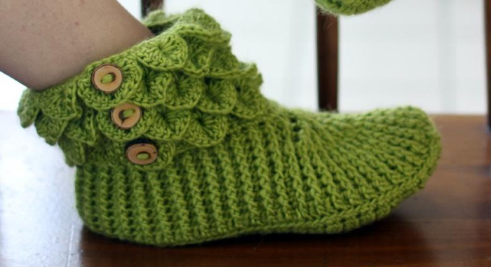
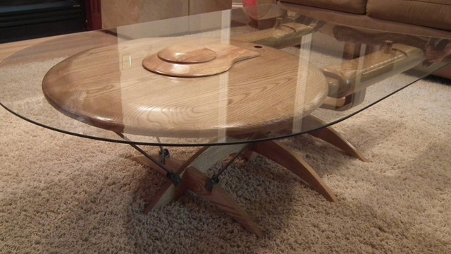
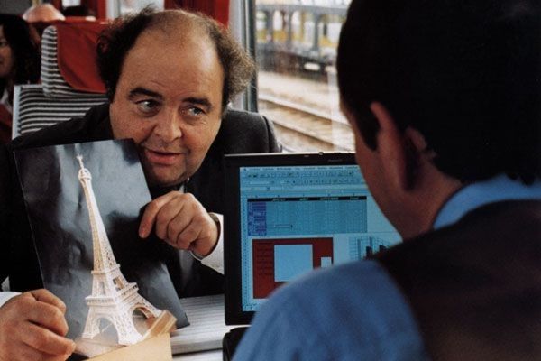
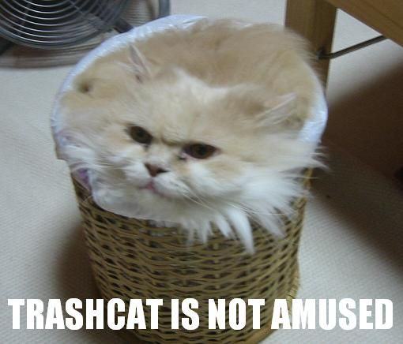
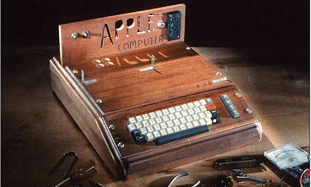
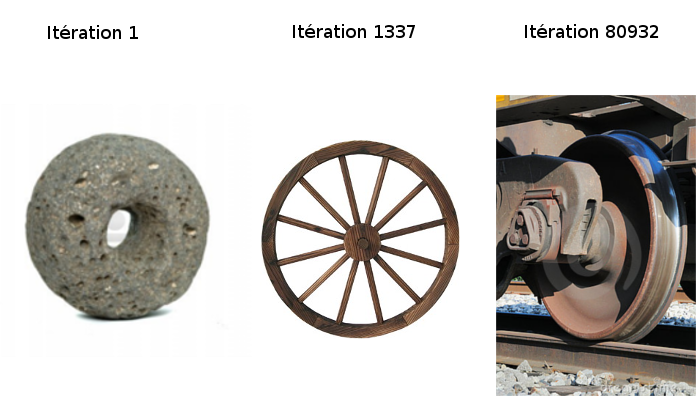
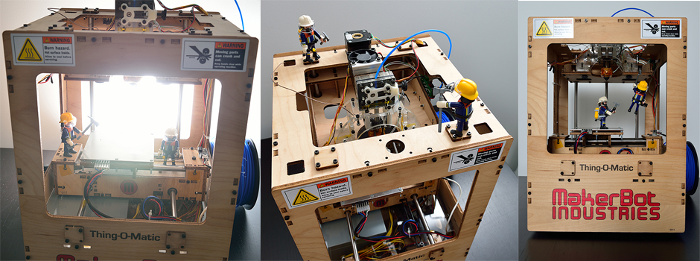

La révolution des makers : du Fab Lab à l'Agilité

Sébastien NEDJAR
Cette présentation se veut non sérieuse et pourra donc contenir du second degré et de l’humour de qualité discutable. Veuillez ne pas jeter des tomates (ou tout autre objet) sur l’orateur s’il heurte par moment votre sensibilité.








“Les bons artistes copient, les grands artistes volent” Picasso
“Nous n’avons jamais eu honte de voler les excellentes idées” Steve Jobs
L’humanité a toujours innové en commençant par copier. Exemples :
- La roue
- Le feu
- La pierre taillée

Avec Internet et les outils numériques la connaissance est accessible à tous.
Et qu’y a t-il de mieux pour apprendre que de faire par soi même ?


Comme tout mouvement voulant apporter du changement, les makers se sont dotés un manifeste. Pour ce manifeste, comme tous les outils des makers, il est fortement recommandé de le modifier et de l’adapter librement pour se l’approprier.
Making is fundamental to what it means to be human. We must make, create, and express ourselves to feel whole. There is something unique about making physical things.
Sharing what you have made and what about making with other is the method by which maker’s feeling of wholeness is achieved.
There are few things more selfless and satisfying than giving away something you have made.
You must learn to make. You must always seek to learn more about your making. You may become a journeyman or master craftman, but you will still learn. Building a lifelong learning path ensures a rich and rewarding making life and, importantly, enable one to share.
You must have access to the right tools for the projects at hand. Invest in and develop local acces to the tools you need to do the making you want to do.
Be playful with what you are making, and you will be surprised, excited, and proud of what you discover.
Join the Maker Movement and reach out those around you who are discovering the joy of making. Hold seminars, parties, events, maker days, fairs, expos, classes, and dinners with and for the other makers in your community.
This is a movement, and it requires emotional, intellectual, financial, political and institutional support. The best hope for improving the world is us, and we are responsible for making a better future.
Embrace the change that will naturally occur as you go through your maker journey. Since making is fundamental to what it means to be human, you will become a more complete version of you as you make.

Pour en savoir plus :
- Site Web : http://www.labaixbidouille.com/
- Twitter : @LabAixBidouille
- Github : https://github.com/LabAixBidouille
- Google groups : lab-aix@googlegroups.com

Outil le plus emblématique des makers. C’est sa démocratisation qui a fait émerger le mouvement.
Brique de base pour le prototypage électronique.


{kind=link}